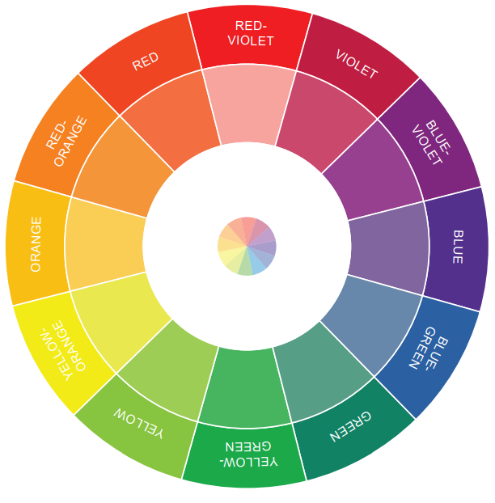

Color Theory Overview
Color theory explores the interplay of colors and their impact on people's emotions and perceptions. It serves as a valuable resource for artists, designers, and creators to select colors that effectively communicate the desired mood or message in their creations. It is impossible to discuss color theory without first becoming familiar with the color wheel, like the one shown below.

Let’s move on to defining various terms that are used in color theory.
Primary Color:
A primary color is a fundamental hue that cannot be produced by blending other colors. The primary colors are red, yellow, and blue. This means that all other colors can be created by mixing various combinations of these three essential colors.
Secondary Color:
A secondary color is formed by blending two primary colors in equal proportions. The secondary colors include orange (created from red and yellow), green (derived from blue and yellow), and purple (resulting from red and blue).
Tertiary Color:
A tertiary color is created by blending equal amounts of a primary color with a neighboring secondary
color on the color wheel. The six tertiary colors are:
* Red-orange: A mix of red and orange
* Yellow-orange: A mix of yellow and orange
* Yellow-green: A mix of yellow and green
* Blue-green: A mix of blue and green
* Blue-violet: A mix of blue and violet
* Red-violet: A mix of red and violet
Saturation:
This describes the intensity or purity of a color, reflecting its vividness and brightness. A color with high saturation appears bright and rich, whereas a desaturated color appears muted and more grayish. Saturation is one of the three main components of color, along with hue (the actual color itself) and value (lightness or darkness).
Hue:
The color family or the fundamental base color of a shade. It is the color that we recognize and name, such as red, green, blue, or purple. Hue is one of the primary characteristics of color, alongside saturation and value.
Value:
The lightness or darkness of a color, essentially measuring it on a scale from pure white (highest value) to pure black (lowest value). This element is crucial in understanding how a color interacts with others within a composition. While "hue" pertains to the color itself (such as red, blue, or green) and "saturation" describes its intensity, "value" specifically centers on the degree of lightness or darkness.
Shade:
A color formed by adding black to a pure hue, which darkens the original color and results in a deeper version. This technique allows for adjusting the value of a color, giving it a more shadowed or rich appearance.
Tint:
Refers to a lighter variation of a color that is achieved by adding white to a pure hue. This process effectively decreases the saturation, resulting in a paler or more pastel appearance. A tint is created by mixing only white with a color, without incorporating any black or gray.
Tone:
Refers to a color produced by mixing a neutral gray with a hue, or by blending pure colors together.
Neutral Color:
Describes a hue that is low in saturation and lacks a strong hue, resulting in a muted appearance without a clear color identity. This category typically encompasses shades of white, black, gray, beige, and brown—colors that are not found on the color wheel. Their subdued nature allows them to blend seamlessly with other colors without creating visual discord.
Warm Colors:
Hues that evoke a sense of warmth, usually encompassing shades of red, orange, and yellow. These colors are often linked to the sun, fire, and heat, representing those on the "red-orange" side of the color wheel. They typically appear to advance in a composition, instilling a feeling of energy or excitement.
Cool Colors:
Denotes hues linked to coolness, typically encompassing shades of blue, green, and purple. These colors often inspire feelings of calmness and serenity, appearing to recede into the background. Essentially, any color with a substantial amount of blue is classified as cool.
Monochromatic Colors:
A color scheme that consists of different shades and tints of a single hue. Any color can be used to establish a monochromatic palette. For instance, by adding white to red, you obtain pink, while adding black results in maroon. Consequently, a monochromatic color scheme could include pink, red, and maroon.
Color Scheme:
A deliberate combination of two or more colors that are used together in design. These colors are typically selected based on their relationships on the color wheel to achieve a visually appealing aesthetic or to evoke a specific mood. Essentially, it's a carefully curated palette of colors that harmonize beautifully.
CMYK:
CMYK stands for Cyan, Magenta, Yellow, and Key (black), representing the four essential colors employed in the printing process. CMYK is both a color model and a printing technique that utilizes these four colors to produce a diverse spectrum of colors in printed materials.
RGB:
"RGB" refers to "Red, Green, Blue," which are the three primary colors of light. When these colors are mixed in different intensities, they can produce any visible color on a screen. This additive color model means that increasing the amount of light results in brighter colors, and it is mainly utilized for digital displays such as computer monitors and televisions.
Hexadecimal Color Code:
A hexadecimal color code, commonly referred to as a "hex code," is a six-digit alphanumeric string that represents a specific color on digital displays. Each pair of digits indicates the intensity of the red, green, and blue (RGB) components in that color, enabling precise color specification for design and coding tasks, such as web development. It begins with a hash symbol (#) and consists of numbers ranging from 0-9 and letters A-F.
Triadic Colors:
Triadic colors consist of three hues that are evenly distributed around the color wheel, forming a triangle. They are popular because they create balance, add visual interest, and convey energy. When using a triadic color scheme, designers frequently select one dominant color alongside two supporting colors. The dominant hue is chosen to reflect a company's brand identity; for instance, green may symbolize growth and abundance. The supporting colors are selected to complement the main color. To achieve a more cohesive blend, the saturation of the supporting colors can be adjusted. Opting for pastel variations can lend a calming effect to the scheme, while bold, saturated colors can create a more dramatic impact
Complementary Colors:
Pairs of hues that lie directly opposite each other on the color wheel. These colors create a striking contrast and amplify each other's brightness. Examples include blue and orange, red and green, and yellow and purple. They are effective for highlighting specific elements. However, it's advisable to avoid using these combinations for text and background, as they can hinder readability.
Split Colors:
A color scheme that incorporates a base color along with two colors that sit next to its complement on the color wheel. For instance, the complementary color of violet is yellow, making its split complementary colors yellow-green and yellow-orange. While split complementary color schemes can be visually striking, they tend to be softer and more pleasing to the eye compared to traditional complementary schemes. Additionally, they provide greater flexibility for balancing warm and cool tones.
Analogous Colors:
Analogous colors are those that sit next to each other on the color wheel and share a similar hue. They are frequently utilized in design to achieve a harmonious and calming aesthetic.